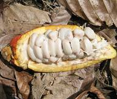

HORT 282 :: Lecture 18 :: COCOA

COCOA
(Theobroma cacao, Sterculiaceae)
Cocoa is a bevarage crop introduced in India in the early 1965’s. It is a native of South America and widely cultivated in Ghana, Nigeria, Sierraleon, Cameroon, Brazil, Equador, West Indies and Malaysia. In India it is cultivated in about 22,000 hectares as a mixed crop in Coconut and arecanut gardens. Kerala accounts for 79 % of the total area and 71% of the total production followed by Karnataka. Cocoa is highly cross pollinated and growing of different varieties adjacent to each other must be encouraged so as to achieve maximum fruit set and yield realization.
Botany
The leaves are alternate, entire, unlobed, 10–40 cm (4–16 in) long and 5–20 cm (2–8 in) broad. The flowers are produced in clusters directly on the trunk and older branches; they are small, 1–2 cm (1/2–1 in) diameter, with pink calyx. The fruit, called a cacao pod, is ovoid, 15–30 cm (6–12 in) long and 8–10 cm (3–4 in) wide, ripening yellow to orange, and weighs about 500 g (1 lb) when ripe. The pod contains 20 to 60 seeds, usually called "beans", embedded in a white pulp. Each seed contains a significant amount of fat (40–50% as cocoa butter). Their most noted active constituent is theobromine, a compound similar to caffeine .A shade-grown cocoa tree can produce fruit for 75 to 100 years or more.
|
|
 |
Varieties
There are three broad types of cocoa - Forastero and Crillo, as well as Trinitario, a hybrid of the two. Within these types there are several varieties.
Forastero
Producing the greater part of all cocoa grown; Forastero is hardy and vigorous, producing beans with the strongest flavour. The Forastero variety most widely grown in West Africa and Brazil is Amelondaro. It has a smooth yellow pod and pale purple beans.
Crillo
With its mild or weak chocolate flavour, Crillo is grown in Indonesia, Central and South America. Crillo trees are not as hardy and produce softer red pods, containing 20-30 white, ivory or very pale purple beans.
Trinitario
Plants are not found in the wild as they are cultivated hybrids of the other two types. Trinitario cocoa trees are grown mainly in the Caribbean, but also in Cameroon and Papua New Guinea. The mostly hard pods contain 30 or more beans of variable colour, though white beans are rare.
|
Forastero |
|
|
Only Forastero types are known to perform well under Indian conditions. Breeding work initiated at the Kerala Agricultural University since 1979 has resulted in the release of seven improved clones of Forastero type. These are CCRP 1, CCRP 2, CCRP 3, CCRP 4, CCRP 5, CCRP 6 and CCRP 7.
These improved clones are suitable for cultivation in different cocoa growing tracts of the country and also in the warm tropical areas especially under the shade of coconut. All these clones are tolerant to vascular streak dieback and have yield potential in the range from 55 to 180 pods per tree per year and mean yield from 38 to 78 pods per tree per year. During 2002, three hybrids viz., CCRP 8, CCRP 9 and CCRP 10 were released. These have mean yields of 90, 105 and 79 pods per tree per year. These are also tolerant to vascular streak dieback disease.
Videos on Cocoa Production |
|
Climate and soil
The cocoa tree flourishes in the dense shade of warm rain forests in its natural habitat and hence can be cultivated in all similar climatic conditions. The tree cannot withstand high winds, drought or sudden fall in temperature.
The crop requires well-distributed rainfall. The minimum requirement of rainfall is about 100-150 cm per annum. Situations where the temperature falls below 10°C or rises above 38°C are unfavourable although minor deviations from the above limit can be adjusted by shade and irrigation. High wind velocity causes considerable mechanical damage to trees.
Cocoa is grown at altitude up to 900 m above MSL though it is possible to grow the crop even in much higher elevations under sheltered conditions.
The best soil for cocoa is forest soil rich in humus. The soil should allow easy penetration of roots and capable of retaining moisture during summer. Clay loams, loams and sandy loams are suitable. Shallow soils should be avoided. Cocoa is grown on soils with a wide range of PH from 6-7.5
Selection criteria for planting materials
Cocoa can be propagated by seed and vegetative means.
Seed propagation
It is desirable to collect seeds from biclonal or polyclonal seed gardens involving superior self-incompatible parents to ensure genetic superiority of planting materials. Polyclonal and biclonal seed gardens have been established at CCRP farm of the Kerala Agricultural University, Vellanikkara and Kidu farm of CPCRI and seeds and seedlings are being supplied to growers. If seeds cannot be procured from such seed gardens, mother plants for collection of seeds may be selected based on the following criteria:
(1) Trees of Forastero type having medium or large pods of not less than 350 g weight or 400 cc volume, green in colour when immature, having smooth or shallow furrows on the surface without prominent constriction at the neck should be selected. Yield of pods should be not less than 100 per year.
(2) Husk thickness of pods to be not more than 1 cm.
3) Pod value (number of pods to give 1 kg wet beans) to be not more than 12.
(4) Number of beans per pod to be not less than 35.
(5) Bean dry weight to be not less than 1 g.
Seeds lose viability within a week of harvest of pods. Seeds are to be sown immediately after extraction from the pods. Viability of the beans can be extended for some more days if freshly extracted seeds are stored in moist charcoal and packed in polybags. Other alternative is extracting beans, removing the testa and packing in polythene bags.
Selection of planting materials
When seedlings are used for planting, select only vigorous and healthy seedlings produced from polyclonal seed garden or selected mother plants as described earlier.
When budded plants are used, select two or more clones for planting as the use of a single clone can lead to poor production due to the existence of self-incompatibility in cocoa.
Seeds and cultivation
Selection of site
Cocoa is usually planted under coconut and arecanut plantations in India. Shade levels under coconut canopy are highly variable depending mainly on the spacing of coconut, extent of canopy development and age of palms. It is estimated that light infiltration through coconut canopy ranges from about 30 to 80 per cent depending upon these factors. Based on this, the general recommendation is as follows:
1. If a choice is possible, a coconut plantation that will let in more light through the canopy may be chosen for raising cocoa.
2. If the light infiltration is over 50 per cent, it may be beneficial to provide additional shade using temporary shade plants like banana.
Preparation of land
The seedlings / budded clones are usually planted in the interspaces of coconut / arecanut. Give a spacing of 3 to 4.5 m. The crop is best grown with 50 per cent light intensity in the early stages. In the early life of the plants, planting of quick growing plants like banana and tapioca can provide temporary shade.
Time of sowing
Though the seeds will germinate at any time of the year, seeds may preferably be sown by December-January, so that 4-6 month old seedlings become available for planting by May-June.
Method of sowing
Seeds are to be sown with hilum-end down or to be sown flat. Sowing is to be as shallow as to just cover the seeds with soil. Removal of pulp may enhance the speed of germination, but the extent of additional advantage is only marginal. Seeds start germination in about a week and germination may continue for another one week. Percentage of germination may be around 90.
Cocoa nursery is to be located in a heavily shaded area, which allows only 25-50 per cent sunlight. Regular watering is necessary to keep the soil moist.
Seedlings are transplanted after 4-6 months. Only vigorous seedlings are to be used and based on height and stem girth, 25% poor seedlings may be rejected. When seedlings are grown under heavy shade, hardening for 10 days by exposing to higher illumination may be necessary before transplanting.
Vegetative propagation
In view of the high variability exhibited by seedling progenies, vegetative propagation is preferred for large scale planting. Though vegetative propagation of cocoa by budding, rooting of cuttings and grafting are feasible, the widely accepted method in India is budding.
Scions for budding are to be collected from high yielding, disease resistant elite plants. Shoots having brown bark and just hardened leaves are selected as bud wood. Scions are preferably procured by cutting off lamina of all the leaves of the selected scion shoot to a distance of about 30 cm from the tip. After 10 days when the petioles have fallen off, these scion shoots are cut and used for budding immediately. Bud wood can be stored by dipping in benzyl chloride followed by washing in water and then sealing the cut ends using molten wax. Bud wood is then wrapped in moist cotton wool and in turn in wet tissue paper or blotting paper and packed in boxes with wet packing material. The packet is then covered using polythene sheets. Storage life of the bud wood can be extended up to 10 days by this method. As far as possible, bud wood is to be collected from chupons as those produced from fans may develop into bushy plants with spreading habit. Rootstock, six to twelve months old may be selected in such a way that scion and rootstock are of the same thickness. Different successful methods include T, inverted T, patch, and modified Forkert methods. Patch budding is adopted in the Kerala Agricultural University.
Patch budding
1. A patch of about 2.5 cm length and 0.5 cm width is removed from the rootstocks.
2. A bud patch of 2.5 cm length and 0.5 cm width from the bud wood is prepared and inserted into the rootstock and tied firmly with polythene tape.
3. After three weeks, if there is bud-take, polythene tape is removed.
4. A vertical cut is made half way through the stem above the bud and is snapped back.

5. The snapped root stock portion is cut back after the bud has grown to a shoot and at least two leaves have hardened.
It is then allowed to grow for a further period of three to six months after which they are transplanted. Under normal conditions, success can be around 70-90 per cent.
Time and method of planting
Cocoa is planted as a pure, mixed crop or intercrop. When planted as a pure crop, Dadap (Erythnina lithosperma) is planted at 3x 3m spacing to provide shade. Dadap needs pruning every year. For more permanent shade, Albizzia stipulate can be planted adopting 9x9 or 12x12m spacings. This requires 4 to 6 years to develop proper canopy to provide sufficient shade.
Cocoa is planted as an intercrop in coconut and arecanut gardens. In coconut, depending upon the spacing adopted, one or two rows of cocoa can be planted in between two rows of coconut i.e., two rows where the spacing is more than 8 m and one row otherwise, the plant distance for cocoa being 2.7 to 3 m. When two-row system is adopted, the seedlings may be planted in zigzag or triangular manner.
In arecanut where the normal spacing is 2.7 m, cocoa is planted at the centre of four areca palms along alternate rows of interspaces only. Pits of 50 x 50 x 50 cm are dug, allowed to weather for one month and refilled with topsoil and 15-20 kg of compost or farm yard manure to ground level. The planting hole should be sufficient to hold the soil ball of the polybag. Tear off the polybags carefully, place the soil ball with the seedlings in the planting hole with minimum disturbance and press the soil around firmly. Planting should coincide with the onset of monsoon, but in places where irrigation is resorted to, flexibility in the time of planting is possible.
Shaping of clonal plants derived from fan shoots
Budded plants from fan shoots have diffuse branching system and bushy growth habit. This type of growth causes difficulties in carrying out cultural operations and harvesting. If a better shape of the plant is desired, appropriate formation pruning may be necessary. This involves identification of a chupon arising from a fan shoot, allowing it to grow and removing the original, lower fan-like shoots in stages. This, however, has to be done slowly as an early drastic pruning will inhibit growth.
Pruning and training
Cocoa grows in a series of storeys, the chupon or vertical growth of the seedling terminating at the jorquette from where four to five fan branches develop. Further vertical growth is continued through a side chupon that arises from a point just below the jorquette which again jorquettes after growing to some height. Left for it, the plant will grow to a height of 8-10 m repeating this process of jorquetting and chupon formation 3-5 times. When cocoa is grown as an intercrop in coconut and arecanut plantation, it is desirable to restrict the growth to one tier formed at a convenient height preferably above the head level of the workers. When jorquetting takes place at lower levels this can be raised by nipping off all the fan branches and allowing one chupon to develop and grow further to jorquette at the desired height. After this is achieved, further vertical growth is arrested through periodical removal of chupons.
The intensity of pruning is to be decided by the nature of growth of individual trees, shade intensity, growth of the companion crops etc. In the early stages, pruning is done to give a particular shape to the tree. After the establishment of the trees in the garden, prune them to the extent of retaining only the required number of leaves (20-30 leaves per developing pod). Removal of secondary branches from the centre should be restricted only to those trees growing in excess shade.
Top working
This technique is useful to rejuvenate old and unproductive cocoa plants and also to convert genetically poor yielders to high yielders. This consists of snapping back the desired trees below the jorquette after cutting half way. The snapped canopy continues to have contact with the trunk. A number of chupons would arise below the point of snapping and this is triggered by the breakage of apical dominance and continued connection with the snapped canopy. Patch budding as described earlier may be done on three to four vigorous and healthy shoots using scions from high yielding, disease resistant clones and the remaining chupons are removed. The polythene tape is removed three weeks after budding and the stock portion above the bud union is snapped back. The snapped portion is removed after two hardened leaves develop from the bud. When sufficient shoots are hardened, canopy of the mother tree can be completely removed. Because of the presence of an established root system and the trunk with reserve food, the top worked trees grow much faster and give prolific yield one year after the operation. Though top working can be done in all seasons, it is preferable to do it in rain-free period in irrigated gardens. For rainfed situations, it may preferably be done after the receipt of pre-monsoon showers.
Top worked trees start yielding heavily from the second year onwards. About 50 per cent improved yield is obtained in the second year and about 100 per cent improved yield in the third year. Loss of crop for one year during the operation is compensated by bumper crop in the coming years. The main stem will continue to belong to the older plant and fruits borne on this area belong to the poor yielder. Better yields are however obtained from the fan branches of the high yielding clone used for top working.
Irrigation
Cocoa grows well as a rainfed crop under conditions of well-distributed rainfall and irrigation is not necessary. If sufficient moisture is not present in the soil due to prolonged drought or failure of rains, irrigation is to be given once in five days. Irrigation, however, helps in better growth of plants and precocity in bearing.
Manuring
Apply N:P2O5:K2O in two equal split doses in April-May and September-October, @ 100:40: 140 g / tree / year. N:P2O5:K2O may be applied @ 200:80:280 g / plant / year, in trees yielding more than 50 fruits per year. Dolomite @ 100 g / plant / year may be applied to plants from the third year onwards.
Under irrigated conditions, the yearly dose may be split into four and applied during April-May, September-October, December and February-March.
Apply 1/3 of adult dose during the first year of planting, 2/3 during second year and full dose from the third year onwards.
Apply fertilizers in circular basins with a radius of 25 cm during the first year. Gradually increase the radius of the basin to 120 cm by the third year. Apply fertilizers in the entire area of 1.5 m radius around the tree followed by forking in.
Plants showing zinc deficiency symptoms (narrowing of leaves, sickle leaf formation, green vein banding, and chlorosis in the interveinal areas) should be sprayed with 0.5 to 1.5% ZnSO4 three times a year.
Weed management
During the first three or four years after planting, it is essential to keep the field free from weeds. Maintenance and regulation of shade should be carried out promptly. During the establishment phase of the crop particularly in summer, provide mulching with materials like chopped banana sheath, coconut husk, cocoa husk etc. to conserve moisture in conditions of direct insolation. A mature cocoa plantation should form a proper canopy, which will be dense enough to prevent weed growth. Operations such as pruning and regulation of shade should be attended to in time.
Pest management
Stem borer (Zeuzera coffeae)
Larvae burrow into the main stem of young plants and fan shoots of older trees, causing drying up.
Control
Prune off and burn affected fan shoots. Spray carbaryl 0.1% on the main stems of young plants as a prophylactic measure.
Striped squirrel (Funambulus sp.)
The squirrels gnaw the bronzing pods and extract the beans along with mucilaginous pulp.
Control
Harvest the crop just when bronzing is visible in the pod furrows. Mechanical protection of the pods can be ensured by covering them with punched polybags (150 gauge) smeared with bitumen-kerosene mixture.
Rats (Rattus rattus)
Rats are serious pests in densely planted coconut gardens with cocoa as an intercrop. They inhabit the coconut palm crowns and descend during night and cause damage to pods. Nature of damage is similar to that caused by squirrels.
Control
Baiting with anticoagulant rodenticides in the garden is recommended. Rain-proof preparations are to be used. Tie fumarin bars (rain-proof) on the base of an inner frond of coconut. Set up bamboo traps with bow attachment on the crown of palms.
Myllocerus weevils (Myllocerus viridanus)
Adults skeletonise the foliage and this is serious in young plants during July-September. Spray undersurfaces of the foliage with Fenitrothion 0.05%, Quinalphos 0.025% or Fenthion 0.05%.
Mealy bugs (Planococcus citri and Rastrococcus sp.)
The bugs occur in cherelles, developing pods and shoots and de-sap the tissues. This can be controlled by spot application of Quinalphos 0.025% or Phosalone 0.1%.
Aphids (Toxoptera aurantii)
Colonies of pink aphids occur ventrally on the leaves of chupon shoot. Tender shoots are also damaged.
Control
Nip off the flaccid leaves along with the shoots and destroy the colonies.
Cockchafer beetle (Popillia sp. and Leucopholis sp.)
Grubs feed on the roots of freshly planted seedlings causing wilting. Apply Carbaryl 10% DP at 10 g per pit around freshly planted seedlings.
The pods are damaged by Helopeltis sp. The pest can be controlled by spraying Endosulfan 0.05%.
Disease management
Seedling blight (Phytophthora palmivora)
The symptoms develop on the leaves and stem of the seedlings or budded plants. On leaves, small water-soaked lesions appear which later coalesce resulting in the blightening of leaves. On stem, water-soaked linear lesions develop initially and later turn to black colour. Stem infection develops at any point on the stem causing the death of seedlings / budded plants.
Control
Remove and destroy severely affected seedlings. Improve drainage and adjust shade. Spray with 1% Bordeaux mixture or 0.3% copper oxychloride or 0.3% potassium phosphonate just before the onset of monsoon and thereafter at frequent intervals.
Phytophthora pod rot / black pod (Phytophthora palmivora, P. citrophthora, P. capsici)
Fruits at all stages of maturity may be attacked by P. palmivora. The first visible symptom is the appearance of a circular brown spot, which enlarges concentrically, and evenly to involve the whole pod surface. Ultimately the colour of the affected pod becomes dark brown or black. In immature pods, the discolouration spreads internally with rotting of the beans. The beans in mature pods may remain partly or wholly unaffected.
Control
Periodically remove and destroy all dried up and infected pods. Spray 1% Bordeaux mixture with adhesive (rosin washing soda preparation) with the onset of monsoon and also at frequent intervals. Provide proper drainage and regulate shade to increase aeration.
Lasiodiplodia pod rot / charcoal pod rot (Lasiodiplodia theobromae)
The disease occurs more frequently during dry season. Pods of all stages are affected. The symptoms appear as pale yellow spots from the stalk-end or tip of the pod. Later, the lesions enlarge and cover the entire pod having chocolate brown colour. In due course, the whole pod develops a black sooty appearance due to formation of spores of the fungus.
Control
Since the disease is more common on pods of plants under stress, better management practices will reduce the incidence of the disease. Remove all affected pods and spray 1% Bordeaux mixture.
Colletotrichum pod rot (Colletotrichum gloeosporioides)
The disease causes rotting of immature pods. Infection starts from the stalk-end of the pod and spreads towards tip as dark brown discolouration with a diffused yellow halo. Internal tissues of the pod also show discolouration. The whole pod turns to black and remains on the tree in a mummified form. Sometimes, infection may start from parts other than the stalk region as dark brown sunken lesion.
Control
Remove all infected pods and spray with 1% Bordeaux mixture or 0.3% copper oxychloride or mancozeb.
Phytophthora canker (Phytophthora palmivora)
The earliest symptom is the appearance of greyish brown water-soaked lesion with dark brown to black margin anywhere on the stem. A reddish brown liquid oozes out from the lesions, which later dry up to form a rusty deposit. The internal tissues beneath the outer greyish brown lesion appear as reddish brown. The wood shows greyish brown discolouration with black streaks. Wilting occurs, when canker girdles the affected stem / branches.
Control
If the disease is detected early, remove and destroy the affected tissues completely and apply Bordeaux paste. Wilted branches should be cut and removed. Since canker mainly develops from pod rot caused by Phytophthora, proper control measures of Phytophthora pod rot will help in reducing incidence of the disease.
Pink disease (Corticium salmonicolor)
The disease appears as a pinkish powdery coating on the stem of affected plants. The pink colour represents profuse conidial production by the fungus. The fungal growth may rapidly spread and girdle the stem, so that the distal parts are affected. The extent to which the leaf may wilt, turn brown and fall depends on the part of the tree, which is affected. The disease mainly affects the forking region and the damage is localized. Splitting of the bark on the affected region is also noticed. Sometimes, the fungus produces pustules (Necator stage), which are orange red in colour and are arranged in rows along the stem.
Control
Remove all the infected and dried branches. Apply Bordeaux paste at the fork region and at the cut ends of the twigs and spray with 1% Bordeaux mixture before the onset of monsoon. Repeat spraying again once or twice during the monsoon season according to the intensity of the disease.
Vascular streak dieback (VSD) (Oncobasidium theobromae)
The first indication of the disease is the characteristic chlorosis of one or two leaves on the second or third growth flush behind the tip. Tip leaves show symptoms first only in very young seedlings or in slows growing seedlings or branches. The patterns on the diseased leave develop into small sharply defined green spots scattered over a yellow background. Diseased leaves fall within a few days after turning yellow. Leaves above and below the first diseased leaf soon begin to show yellowing with green patches and these also fall off finally resulting in dieback of the infected branches.
Leaf scars from the fall of chlorotic leaves are sometimes covered by a white, loosely adherent fruiting body of the fungus. These fruiting bodies have been found only on leaf scars and adjacent bark in the diseased region of cocoa stems. If the diseased stem is split longitudinally, the xylem is found to be discoloured by brown streaks.
Control
Cut and remove all infected twigs. Prune off all affected branches 30 cm below the last point of visible vascular streak of the stem to prevent further spread within the plant. Grow VSD tolerant cocoa types.
White thread blight (Marasmius scandens)
The white mycelial threads of the fungus spread longitudinally and irregularly along the surface of the stem of young branches and enter the leaf along the petioles. On the leaf lamina it spreads extensively and forms a much-branched system of fine threads. The affected leaves turn dark brown and such dead leaves eventually get detached from the stem, but are found suspended by the mycelial thread. Extensive death of the young branches and suspended leaves in rows are the common field symptoms.
Control
Remove and destroy the affected plant parts. Avoid heavy shade. Spray 1% Bordeaux mixture.
Harvesting
It takes about 170 days for a cocoa pod to develop from formation to maturity. During the period from 70-140 days after pollination, the size of pods and their fat and sugar content increase rapidly. Ripening takes about 25 days, during which, the pods change colour depending on the variety. Pods remain suitable for harvesting for fairly long time after they have ripened. Hence, it is possible to have harvest of sufficient number of pods at a time by either delaying the harvest of early-ripened pods or harvest of pods, which are fully ripened. Harvesting should be done at regular intervals rather than daily, once in 7-10 days. Avoid over-ripening of pods. The discards at the harvest can be left in the garden either in the open during summer or in pits at different sites in the rainy season, or they can be incorporated in the compost. Pod husks from the fermentary can also be used similarly as a good source of organic manure.
Pods are removed by cutting with a sickle-sharp knife, without damaging the cushion from which it is developed. After 2-3 days, they are split by banging them against some hard objects. Opening the pods with a knife damages the beans. During the period between harvesting and splitting, pre-fermentation activity inside the pod is hastened, which improves later fermentation. Beans from the split pods are scraped out with fingers. Portions of placenta and broken, germinated, caked, parthenocarpic and undeveloped beans are removed. On an average, 10-12 pods give 1 kg of wet beans and 3 kg of wet beans (from 30-36 pods) give 1 kg of fermented and dried beans.
Processing
Fermentation
During fermentation, the pulp or mucilage covering the fresh beans is removed and characteristic chocolate flavour is imparted to the final produce. The process is simple but must be carried out properly in order to get beans of good quality. Heat is produced by keeping the fresh beans compactly and this heat must be conserved so that chemical changes inside the bean can be completed. The four methods of fermentation usually employed involve the use of baskets, heaps, boxes and trays for filling up the wet beans.
Tray method
The best method suitable for small quantities of beans is the tray fermentation. Wooden trays, 10 cm deep with slatted / split cane bottoms are divided into a number of sections by means of wooden partitions that fit into appropriate grooves at required distances. The capacity of the tray can be adjusted depending upon the availability of beans by keeping the wooden plank in the appropriate grooves. A convenient tray can be 25 cm wide and 60 cm long. Wet beans are filled in the tray and levelled. About 10 kg of wet beans may be required to load one tray fully.
A single tray of beans will not ferment properly and at least four or five trays are needed for successful fermentation. The trays are stacked one over the other in such a manner that the cocoa filled portions are in a single row one above the other. The top tray is covered with plantain leaves. After 24 hours, a close fitting sack is put to cover the stack to keep the beans warm. Mixing or stirring of beans is not necessary and fermentation gets completed in 4 to 5 days, whereas 6 to 7 days are required for other methods of fermentation.
Basket method
In this method, bean lots ranging from 2-6 kg can be fermented successfully. Mini baskets may be made of bamboo matting, closely woven and should have a diameter of 20 cm and height of 15 cm for a capacity of 2 kg. For slightly larger lots, proportionately deeper baskets may be used (e.g., for 6 kg, the depth may be about 40 cm). The baskets are lined with one or two layers of torn banana leaves to facilitate drainage of sweating. Wet beans are then filled, compacted and covered with banana leaves. The baskets are placed on a raised platform to allow the flow of drippings. After 24 hours, it is covered with gunny-sack and applied weights (bricks). The beans are to be taken out and stirred well 48 hours and 96 hours after the initial setting. Fermentation will be completed in six days and the beans can be taken for drying on the seventh day.
A number of factors influence the duration of fermentation. Weather changes and season are important through their influence on temperature and atmospheric moisture. Ripening also affects fermentation. Beans from unripe pods cannot be fermented. Beans of Criollo ferment more quickly than those of Forastero. During the early stages of fermentation, heat is produced by the action of anaerobic microorganisms. The beans are killed by the combined effect of heat and acetic acid and the cocoa aroma and flavour potential are developed.
Judging the end point of fermentation
Well-fermented beans will be plumpy and filled with a reddish brown exudate. The testa becomes loosened from the cotyledons. When cut open, the cotyledons will have a bleached appearance in the centre with a brownish ring in the periphery. When above 50% of beans in a lot show the above signs, it can be considered as properly fermented.
Drying
On completion of fermentation, beans are dried either in the sun or by artificial means. Sun drying can be done in thin layers 2-3 cm deep and stirring from time to time. Under normal sunny weather, drying can be completed in four to five days. While drying in mechanical driers, care must be taken to avoid exposure of the beans to smoke, fumes etc. The most common method of determining bean dryness is to take a sample and compress this in the palm of the hand and listen for the characteristic sound, which is associated with correctly dried cocoa. The more scientific method is to use a moisture meter.
Storage
The dried beans with moisture content of 6-8% may be packed in polythene bags or polythene lined gunny bags. Some special conditions have to be provided in storage in order to maintain the quality of the cured beans. Properly dried beans can be kept in 200-300 gauge polythene covers if only small quantities are involved or in polythene lined gunny bags in the case of larger stocks. Beans should be cleaned of flat, broken and other defective beans before storing. The store should be sufficiently ventilated and the bags should be kept on a wooden platform with air space of about 15-20 cm below the wooden planks set over the floor. The humidity should not exceed 80% so as to prevent mould development and pest incidence in the beans. Before storing cocoa, the store can be made clean and insect free by application of pesticides well in advance, but pesticides should neither be applied nor be kept with the beans inside the store. As cocoa beans can absorb and retain permanently any odour from its surroundings, other food-stuffs should not be kept with cocoa. So also, smoke or kerosene fumes should be prevented from entry.
**************
- Scientific name of cocoa is ____________
- Two types of cocoa are _________________
- Mode of propagation in cocoa is ______________
- _____________ type of flowering is seen in cocoa
- Major pest of cocoa is _____________
| Download this lecture as PDF here |